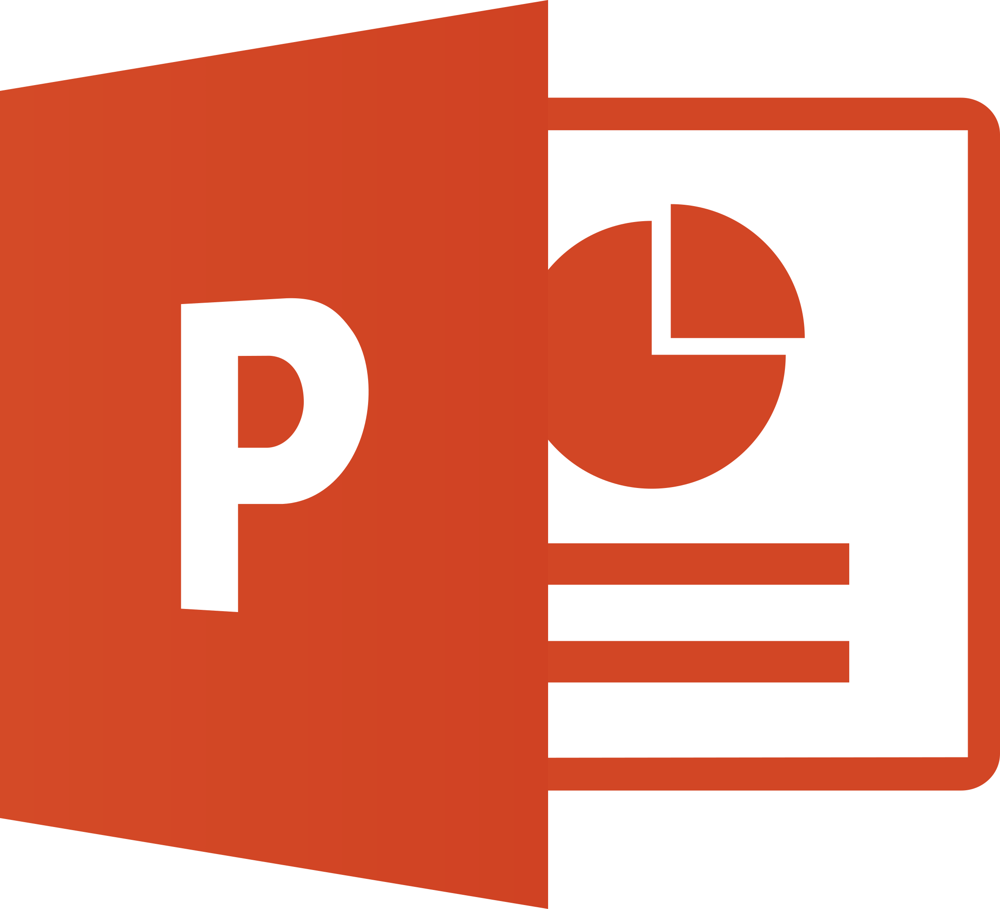

Microsoft Word
Microsoft Word es una aplicación ofimática ampliamente utilizada para la creación, edición y formato de documentos de texto, como tareas escolares, informes académicos, cartas, currículums y otros trabajos escritos. Este programa ofrece diversas herramientas que permiten modificar el tipo y tamaño de letra, aplicar estilos, configurar márgenes y organizar el contenido de forma ordenada. Además, Word permite insertar imágenes, tablas, gráficos y encabezados, facilitando la presentación profesional de la información y mejorando la comprensión del contenido.
Microsoft Excel
Microsoft Excel es una aplicación ofimática diseñada para trabajar con hojas de cálculo, la cual permite organizar, analizar y gestionar datos de manera eficiente. Este programa es ampliamente utilizado en el ámbito académico y profesional para realizar cálculos matemáticos, crear tablas, elaborar gráficos y aplicar fórmulas automáticas. Excel facilita la organización de información mediante filas y columnas, permitiendo interpretar datos de forma visual y clara, lo que resulta fundamental para la toma de decisiones y el análisis de información.


Microsoft PowerPoint
Microsoft PowerPoint es una herramienta de ofimática utilizada para la creación de presentaciones digitales mediante diapositivas. Permite combinar texto, imágenes, gráficos, animaciones y transiciones para comunicar ideas de manera clara y atractiva. Esta aplicación es muy utilizada en exposiciones académicas, presentaciones empresariales y proyectos educativos, ya que facilita la explicación de contenidos de forma visual, organizada y dinámica, mejorando la comprensión del público.